Saw-edged
spooner crab
Etisus utilis
Family
Xanthidae
updated
Dec 2019
Where
seen? This crab with distinctive saw-like teeth on the edge of its body is sometimes seen near reefs with lots of corals.
Features: Body width 4-6cm. Body
somewhat circular with large teeth on the edges that resembles a saw.
Pincers large with short spines and black tips. Red or reddish brown, sometimes with white patterns. |

Pulau
Semakau, Sep 05 |
|
|
| Saw-edged spooner crabs on Singapore shores |
| Other sightings on Singapore shores |
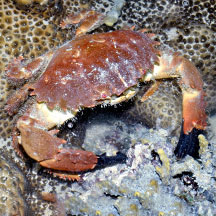
Big Sisters Island, Feb 25
Photo shared by Loh Kok Sheng on facebook. |
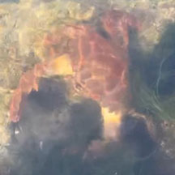
Pulau
Jong, May 24
Photo shared by Kelvin Yong on facebook. |
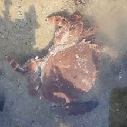
Terumbu Hantu, Aug 23
Photo shared by Che Cheng Neo on facebook. |
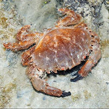
Pulau
Hantu, May 13
Photo shared by Loh Kok Sheng on flickr. |
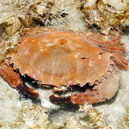
Pulau
Hantu, Oct 14
Photo shared by Loh Kok Sheng on flickr. |
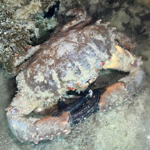
Pulau Hantu, Jun 24
Photo shared by Kelvin Yong on facebook. |
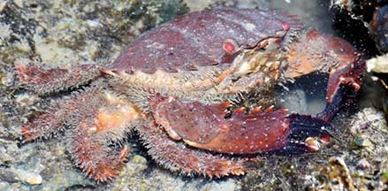
Pulau
Semakau (East), Dec 20
Photo shared by Loh Kok Sheng on facebook. |
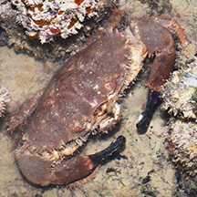
Pulau
Semakau East, Jul 15
Photo shared by Loh Kok Sheng on facebook. |
|
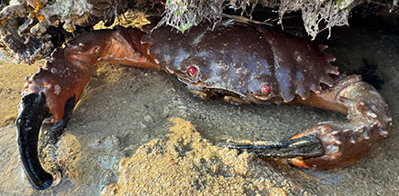
Pulau
Semakau (West), Jul 25
Photo shared by Tammy Lim on facebook. |
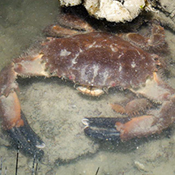
Terumbu
Semakau, Jul 14
Photo shared by Marcus Ng on facebook. |
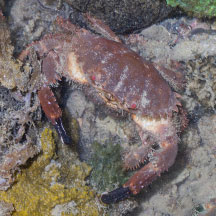
Terumbu
Semakau, May 23
Photo shared by Marcus Ng on facebook. |
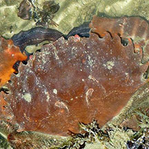
Pulau
Semakau, Sep 09
Photo shared by Loh Kok Sheng on flickr. |
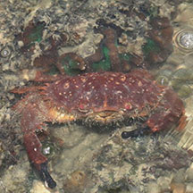
Terumbu Bemban, Jun 17
Photo shared by Abel Yeo on facebook. |
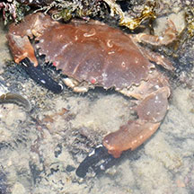
Terumbu Bemban, Jun 20
Photo shared by Loh Kok Sheng on facebook. |
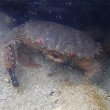
Beting Bemban Besar, May 24
Photo
shared by Kelvin Yong on facebook. |
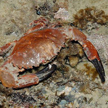
Terumbu
Raya, Aug 14
Photo shared by Loh Kok Sheng on flickr. |
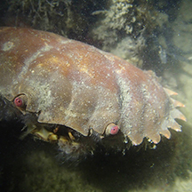
Terumbu
Raya, Aug 14
Photo shared by Jianlin Liu on facebook. |
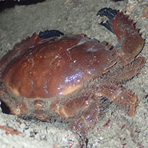
Terumbu
Raya, Fen 23
Photo shared by Kelvin Yong on facebook. |
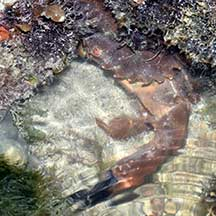
Terumbu
Pempang Tengah, May 22
Photo shared by Loh Koh Sheng on facebook. |
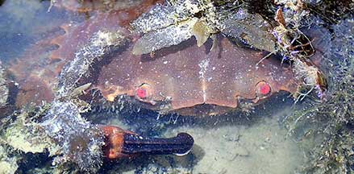
Pulau Berkas, Feb 22
Photo shared by Jianlin Liu on facebook. |
|
|